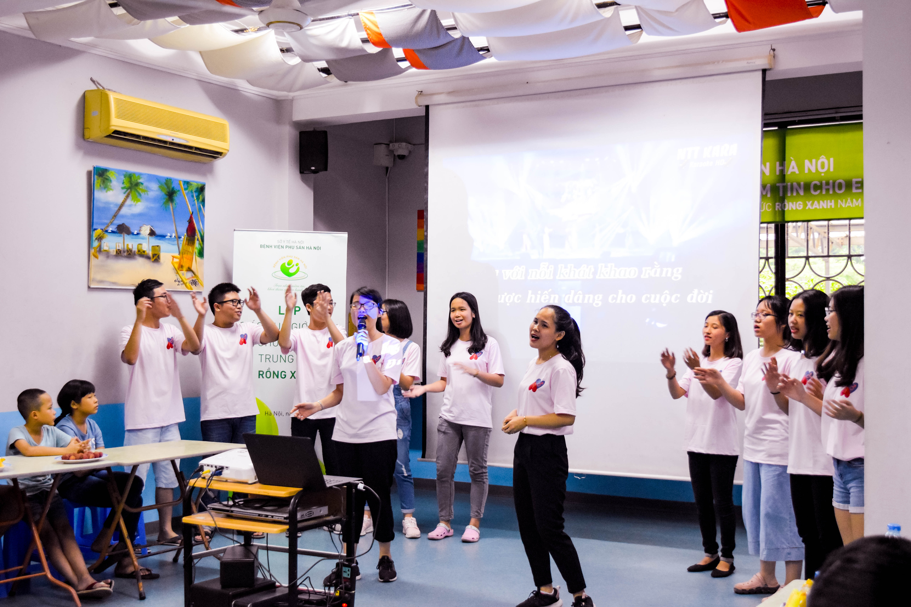

CHÚNG TÔI LÀ AI?
Sex Education For You (gọi tắt là SEFY VN) là một tổ chức phi lợi nhuận được sáng lập với mục đích ban đầu là trang bị những kiến thức giáo dục giới tính cơ bản cho trẻ em từ 9-15 tuổi có hoàn cảnh khó khăn thông qua việc hợp tác với các tình nguyện viên và chuyên gia chăm sóc sức khỏe ở nhiều địa phương để tổ chức các khoá học giáo dục giới tính cho đối tượng nói trên.
Năm 2018, với những thành tựu ban đầu, SEFY VN tiến một bước xa hơn nhằm phổ cập các kiến thức về giới và giới tính cho một đối tượng rộng rãi hơn - trẻ em Việt Nam bằng cách phối hợp nhiều phương pháp khác nhau với những trẻ em có hoàn cảnh khác nhau, sử dụng một cách hợp lí nhất nguồn lực có hạn của tổ chức.
- 
SỨ MỆNH
Trước thực trạng ngày càng phổ biến của những vụ xâm hại tình dục và bệnh lây lan qua đường tình dục, SEFY VN mong muốn trở thành một tổ chức dẫn đầu trong việc mang đến cho trẻ em Việt Nam, đặc biệt là những em có hoàn cảnh không may mắn, những kiến thức cần thiết về sức khỏe giới tính và sinh sản để các em có thể tự chăm sóc và bảo vệ bản thân mình một cách tốt hơn.
Thông qua những hoạt động của tổ chức xung quanh vấn đề giới tính, chúng tôi cũng mong ước SEFY VN sẽ góp phần khiến cho xã hội Việt Nam trở nên cởi mở hơn về vấn đề giới tính, nhất là trong xã hội hiện đại khi trẻ em ngày càng dậy thì sớm hơn và rất cần những nguồn thông tin chính xác và dễ tiếp cận về vấn đề này.
LỊCH SỬ HOẠT ĐỘNG
Dù mới được thành lập từ năm 2016, SEFY VN đã vươn mình đạt được một số thành tựu đáng tự hào trên con đường đem giáo dục giới tính đến với trẻ em có hoàn cảnh khó khăn. Một số thành tích trong những năm hoạt động vừa qua của tổ chức gồm:
1. Năm 2016:
Riêng trong năm 2016, chúng mình đã mang giáo dục giới tính đến với 4 tổ chức trẻ em trên khắp đất nước: Làng trẻ em SOS ở Hà Nội, Vinh - Nghệ An, Hà Tĩnh và trường Tiểu học Bàn Đạt - Thái Nguyên.

2. Năm 2017:
Sau thành công của SEFY VN mùa đầu tiên, chúng mình lại tiếp tục một năm đầy những thành quả đáng tự hào. Lần này, SEFY VN không chỉ mở rộng quy mô ra miền Nam Việt Nam mà còn áp dụng được công nghệ vào phát triển những hoạt động của mình, thể hiện bằng sự xuất hiện của các hoạt động trực tuyến nữa.
Dưới đây là cụ thể hơn những hoạt động của tổ chức năm 2017:
- SEFY VN mở rộng tới Làng trẻ Picasso ở thành phố Hồ Chí Minh.
- SEFY VN xuất hiện ở nhà nuôi dưỡng trẻ em hữu nghị Đống Đa, Hà Nội.
- SEFY VN thành lập thêm một cơ sở độc lập ở Quảng Trị dưới tên SEFY Việt Nam - Quảng Trị. Ở cơ sở này, ngoài những hoạt động dạy giáo dục giới tính, SEFY VN còn tổ chức những cuộc thảo luận vô cùng hữu ích về vấn đề giới như bình đẳng giới, nữ quyền, quyền LGBT, v.v.
- Ngoài ra, ở Hà Tĩnh cũng có một cơ sở nhỏ của SEFY VN, và ở đây một diễn đàn online đã được lập ra để thảo luận về những vấn đề giới tính và tình dục vô cùng quan trọng trong xã hội bây giờ.
3. Năm 2018:
Và trong năm nay, mùa thứ 3 của SEFY VN, những hoạt động vẫn được duy trì đều đặn và còn mở rộng thêm nữa. Sau đây là một số hoạt động của tổ chức trong nửa đầu năm nay:
Tổ chức thành công khoá học Giáo dục Giới tính và Sức khoẻ sinh sản cho các trẻ em đường phố tại Quỹ Trẻ em Blue Dragon tại Hà Nội.
ĐỘI NGŨ HOẠT ĐỘNG
SEFY VN có Ban Quản trị ở từng tỉnh thành chịu trách nhiệm cho các hoạt động ở tỉnh thành đó.
Các thành viên của SEFY VN hầu hết ở trong lứa tuổi 15-23, là những học sinh, sinh viên năng nổ, tích cực từ nhiều nơi trên toàn quốc.
CÁCH THỨC HOẠT ĐỘNG
Hoạt động của SEFY VN chia làm 2 kênh chính: Online và Offline (có 2 nút bấm Online và Offline).
Các thành viên của SEFY VN hầu hết ở trong lứa tuổi 15-23, là những học sinh, sinh viên năng nổ, tích cực từ nhiều nơi trên toàn quốc.
Offline:
- Mang đến những khoá học Giáo dục giới tính ngắn hạn cho các trẻ em có hoàn cảnh khó khăn từ 9-15 tuổi ở một số tỉnh thành của Việt Nam.
- Tổ chức các buổi hội thảo, trại hè và các hoạt động tuyên truyền khác về các chủ đề liên quan đến giới tính và sức khoẻ sinh sản.
Online:
- Thực hiện dịch vụ tư vấn miễn phí 24/24 về các vấn đề liên quan đến giới tính, sức khoẻ sinh sản và bạo lực gia đình.
- Cung cấp giáo án giảng dạy Giáo dục giới tính miễn phí, chính xác và dễ sử dụng cho các giáo viên hay các bậc phụ huynh để dễ dàng truyền đạt kiến thức tới các em nhỏ
- Xây dựng một thư viện online bao gồm các video và bài viết về các chủ đề liên quan đến giới tính. Đặc biệt, người đọc cũng có thể gửi các bài viết cho SEFY VN để chúng tôi xem xét đăng bài.